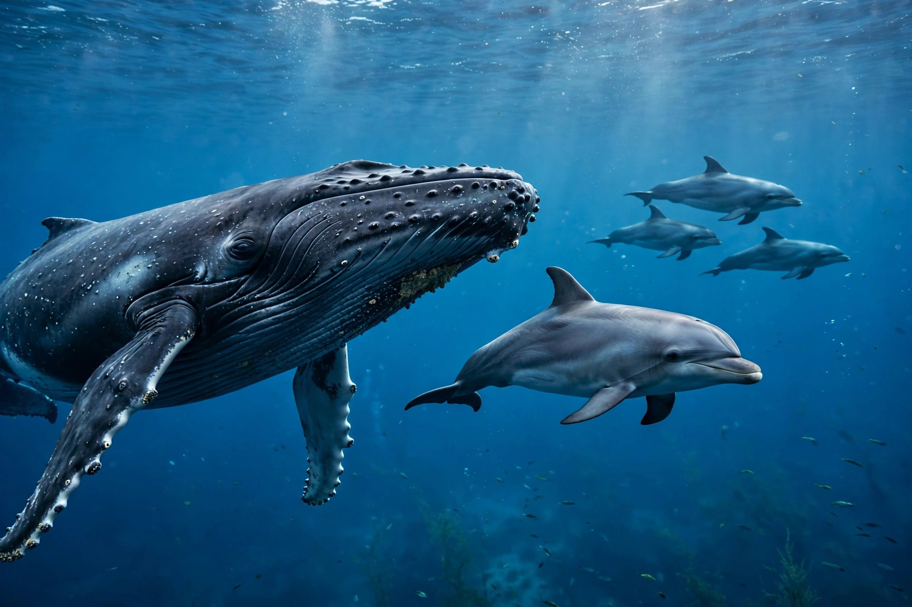

Cetacea is an infraorder of fully aquatic marine mammals commonly known as whales, dolphins and porpoises. About 90 living species are divided into baleen whales (Mysticeti) and toothed whales (Odontoceti).

| Kingdom | Animalia |
|---|---|
| Class | Mammalia |
| Infraorder | Cetacea |
Cetaceans evolved about 50 million years ago in the Eocene from even-toed ungulate ancestors, related most closely to hippopotamuses. Early forms such as Pakicetus were terrestrial, followed by amphibious and fully marine archaeocetes before modern mysticetes and odontocetes diverged.
Streamlined bodies, forelimb flippers, vestigial hind limbs, horizontal tail flukes and a blowhole characterise the group. Toothed whales use echolocation; baleen whales filter krill and small fish. Many species are highly social, vocal and migratory, and several were devastated by commercial whaling before international protections.